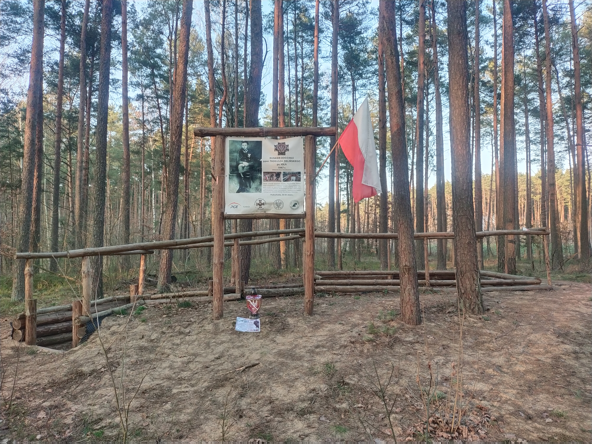
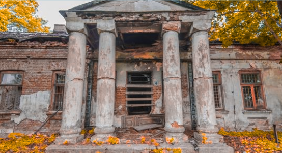
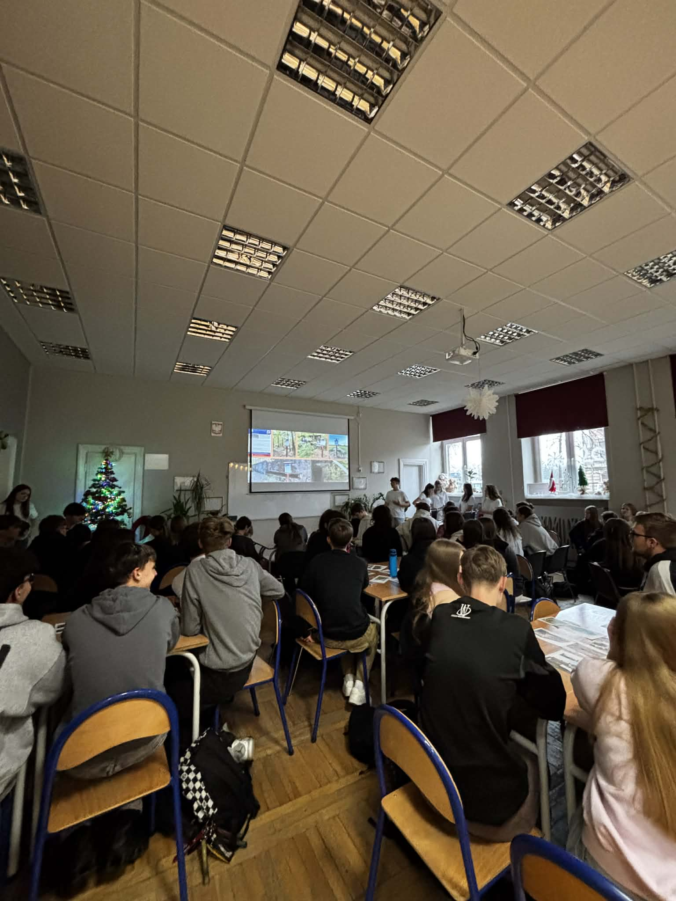

Budujemy most między przeszłością a teraźniejszością
„Most Przeszłości" to projekt poświęcony odkrywaniu, dokumentowaniu i dzieleniu się historią. Wierzymy, że zrozumienie przeszłości jest kluczem do budowania lepszej przyszłości. Łączymy pokolenia, kultury i wspomnienia.

Prowadzimy dogłębne badania archiwalne i terenowe, odkrywając zapomniane historie.

Dokumentujemy i chronimy materialne oraz niematerialne dziedzictwo kulturowe.

Organizujemy warsztaty, wykłady i spotkania międzypokoleniowe.
Dowiedz się więcej o naszej misji, działaniach i planach na przyszłość.
Czytaj więcej